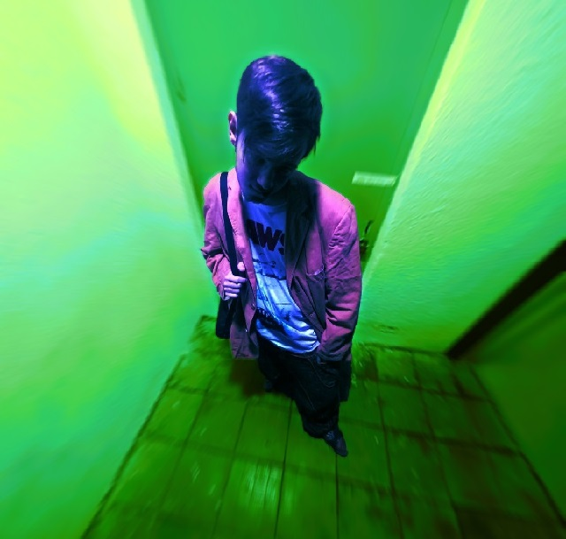

Welcome to my website!
Who are you?
My name is Savelii (also know as savaizcool, L08ST3R and savelius on the interwebz). I am 18 y.o. and I am an amateur photographer, meme maker, event organiser, tea lover and a very bad web designer.
Why do you have a website?
I was bored and lonely, so I decided to do something to keep myself busy and remembered how I used to make "websites" from two lines in Notepad when I was 12.
Why does the website look so old?
I have always loved the late 90s web aesthetic and I adore the stuff that people make on NeoCities. The feeling of discovery and adventure you get when you are surfing the web the old-fashioned way is incredible. I even have a page with my favourite websites, you should check it out!
This website is currently very WIP, as I am not really great in web design, programming or any of that stuff. I am learning as I am making this, so stay in touch for updates!